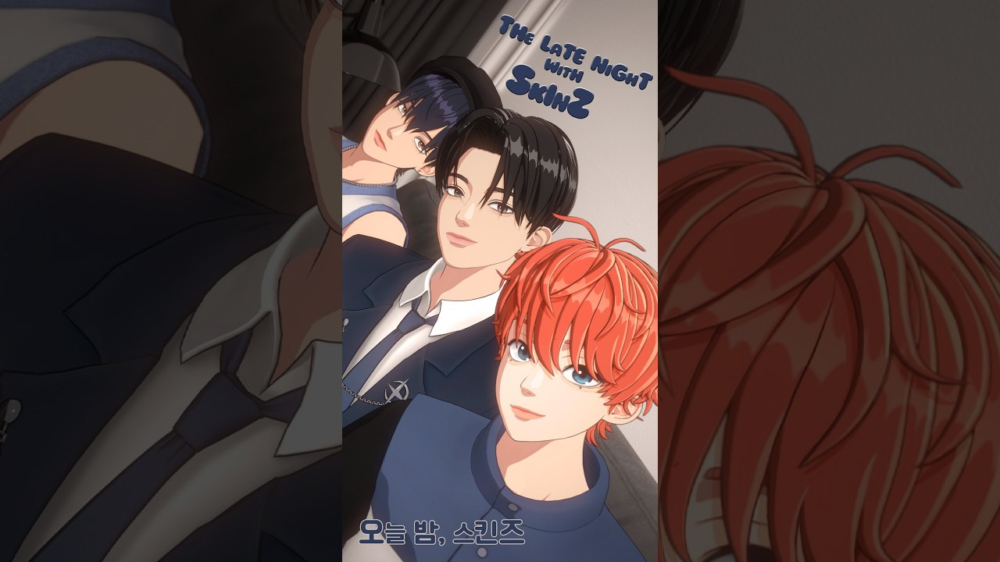

SKINZ分類：Instagram · 直播日期：2025-04-27SKINZ SBS歌謠大戰東京巨蛋出道舞台後 首次 VOICE LIVESKINZ 在 YouTube 觀看原始影片×載入 YouTube 播放器 繁中韓文雙語A−12ptA＋劇院模式繁體中文點播放後，字幕會顯示在這裡韓文 1010速度 0.75×1×1.25×1.5×2×00:00 / --:-- 分享這篇@fLINE𝕏 影片翻譯評分☆☆☆☆☆選擇 1～5 星展開雙語逐字稿 點擊查看完整內容雙語逐字稿雙語韓文繁中 自動跟隨播放文字大小 A−A＋重設字幕偏移（秒） 字幕比聲音早出現時填正數00:00:45자, 둘, 셋.來 二 三00:00:47>> 안녕하세요. 스킨지입니다.大家好 我們是 SKINZ00:00:51>> 자, 여러분, 저희 오늘 데뷔 무대가各位 今天我們的出道舞台00:00:53처음으로 공개되었는데요. 모두 잘首次公開了 大家00:00:55보셨을까요?都看了嗎00:00:58네. 저희는 영인라우드라는 곡으로我們是以 Young and Loud00:01:00대뷔한 7인 그룹 스킨즈입니다.出道的七人團體 SKINZ00:01:03오.00:01:04>> 자, 그럼 이제 처음으로 이제那麼今天是第一次00:01:05인사드리는 자리니까 각자 자기 소개正式向大家打招呼 我們各自00:01:08한번 먼저 해 볼까요? 네.先自我介紹一下 好嗎00:01:09안녕하세요. 저는 리더 도빈입니다.大家好 我是隊長 Dovin00:01:13>> 네. 안녕하세요. 저는 메인 댄서大家好 我是主舞00:01:15최원입니다. 반갑습니다.Jaon 很高興見到大家00:01:18>> 헬로. 저는 스킨즈의 막내이자 팀내Hello 我是 SKINZ 的忙內00:01:20소년미를 담당하고 있는 유리입니다.也是負責少年感的 Yull00:01:23>> 예.對00:01:26>> 네. 여러분, 오늘 저희 이제 데뷔各位 今天出道舞台00:01:28무대 나가고 나서 처음으로 라이브로播出之後 第一次用直播00:01:30이제 여러분을 만나뵐 수 있어서 너무和大家見面00:01:32이제 기대가 됩니다.我很期待00:01:33>> 네. 와, 다시 생각해도 저희가再次回想起來00:01:35도쿄에서 팬분들을 처음 만났던 그在東京第一次見到粉絲的00:01:38순간을 잊을 수가 없어요.那個瞬間 我忘不了00:01:39>> 어, 말 나온 김에 다들 어땠어요?說到這裡 大家覺得怎麼樣00:01:41저희 데뷔 무대.我們的出道舞台00:01:43>> 어, 그러면 저희 리더 도빈형님부터那從隊長 Dovin 哥開始00:01:45한번 말씀해 볼까요?分享一下吧00:01:46>> 음.00:01:48일단 저는 그 도쿄이 진짜 떨렸는데我在東京的時候很緊張00:01:52이제 저희 멤버들이랑 같이 노력한但我們成員一起00:01:54시간들이 있으니까 그 시간들을 조금努力了很久 所以就想00:01:56믿어보자 하는 마음으로 올라갔던 거相信那些努力 然後站上舞台00:01:58같아요.我是這樣想的00:01:59>> 저희 진짜 열심히 노력했으니까我們真的很努力00:02:01연습한만큼 다 보여주자 이런 마음.所以把練習的成果全展現出來00:02:03>> 음. 저도我也是00:02:05>> 재훈이형 어땠어요? 어, 저도 딱Jaon 哥呢 我也00:02:07그랬던 거 같아요. 근데 저는 오히려有同樣的感覺 不過對我來說00:02:09막상 무대 올라가려고 하니까 살짝真正要上台的時候00:02:12긴장감보다는 설렘이 더 컸던 거比起緊張 期待00:02:14같아요. 그 저희를 위해서 환우정을更多一些 因為能聽見00:02:16질러 주신 그런 분들이 목소리도為我們歡呼的00:02:18들리고那些聲音00:02:19>> 또 빨리 올라가서 보여 드리고 싶은所以很想快點上台00:02:21그런 마음이었어요.表演給大家看00:02:22>> 오.00:02:23>> 그럼 저희 이유은 혹시 어땠나요?那 Yull 呢00:02:25>> 아, 저는 아직도 그날만 생각하면我現在只要想到那天00:02:27가슴이 뛰어서 잠시 심호흡 좀就心跳加速 先讓我深呼吸00:02:31>> 네. 저는 사실 실수만 하지 말자라는我當時只有一個念頭00:02:34생각 하나로 무대에 딱 섰거든요.不要失誤 就這樣上台了00:02:36근데 막상 올라가서 저희 음악이可是一上台 我們的音樂00:02:37나오는 순간 긴장감은 사라지고 갑자기響起的瞬間 緊張就不見了00:02:39신이 나는 거예요. 그래서 첫突然興奮起來 所以00:02:41무대지만 즐겼던 거 같아요. 예쁜雖然是第一次表演 我也很享受00:02:43불빛으로 가득찬 관준석 보면서 살짝看著觀眾席滿滿的漂亮燈光00:02:46눈물도 참았습니다.還忍住了一點眼淚00:02:48>> 역시 역시 우리 막내 율당 후기에요.果然是我們忙內 Yull 的心得00:02:51재원도 그렇고Jaon 也是00:02:53>> 이제 저희가 이제 무대 올래 가기在我們上台00:02:55직전에 제가 멤버들 표정을 살짝前 我看了一下00:02:56봤거든요.成員們的表情00:02:57>> 음. 음 이제 다들 이제 기대감이랑大家充滿期待00:03:00약간 이런 걸로 반짝이는 눈빛으로眼神閃閃發亮00:03:02대기하는 모습이 진짜 대겨나오면서도等待上台的樣子 讓我很驕傲00:03:04약간 마음이 약간 웅크하더라고요.也有點感動00:03:06>> 어00:03:06>> 이게 저희가 사실 연습 과정이00:03:08쉽지만은 않았잖아요. 그죠?並不輕鬆 對吧00:03:09>> 그죠? 그죠?沒錯 沒錯00:03:10>> 근데 이제 멋지게 이제 해내는 모습을可是看到大家帥氣地00:03:12보면서 약간 뿌듯함도 있었어요.完成舞台 也覺得很欣慰00:03:14>> 음. 근데 저희가 진짜 무대我們準備舞台的時候00:03:17준비하면서 도빈형이 고생을 진짜 많이Dovin 哥真的00:03:19했거든요.很辛苦00:03:20>> 맞아요. 맞아요.沒錯 沒錯00:03:21>> 아, 근데 다시 생각해 봐도 그 무대現在想起來 上台00:03:23올라가기 직전에 막 심장이 터질 것前那種心臟要爆炸的00:03:25같은 그런 기분은 저는 평생 못 잊을感覺 我一輩子都00:03:28것 같아요. 그리고 저는 무엇보다忘不了 而且最重要的是00:03:30저희가 빨리 보여 드리고 싶었던 노래這是把我們迫不及待00:03:32영라워드를 직접 들려 드릴 수 있는想分享的 Young and Loud00:03:33시간이라서 너무 행복 너무 행복했던親自唱給大家聽的時刻00:03:36거 같아요.所以很幸福00:03:38>> 맞아요. 근데 저희도 너무 좋아하던對 因為我們也很00:03:39노래라서 그렇죠.喜歡這首歌00:03:40>> 맞아요. 맞아요.沒錯 沒錯00:03:41>> 음. 안 그래도 그래서 이제 저희가所以今天我們也00:03:44영앤우드 비하인드 관련해서 오늘為了聊 Young and Loud 的幕後故事00:03:46얘기를 하려고 질문지를 저희가 준비를準備了問題卡00:03:48했어요.在這裡00:03:49>> 오.00:03:49>> 그래서 저희 멤버별로 뽑아서 한번00:03:51이야기를 해 볼까요?再一起聊聊吧00:03:52>> 아, 좋습니다.好啊00:03:52>> 좋습니다. 그럼 제가 먼저 뽑아도好啊00:03:53되나요? 네. 네. 뽑아 주세요.好 請抽00:03:55유리가.由 Yull 來00:03:57>> 자,00:04:01영앤 라우드를 한 단어로 소개해請用一個詞介紹 Young and Loud00:04:03주세요.介紹一下00:04:04>> 아이고.00:04:05>> 한 단어 도빈형부터 한번 말해一個詞 從 Dovin 哥00:04:07볼까요?開始說吧00:04:08>> 한 단어. 잠시만요.一個詞 等我一下00:04:09>> 네. 한단한 단어. 천천히 하셔도一個詞 慢慢想00:04:11됩니다.沒關係00:04:12>> 어 영앤우드란Young and Loud 是00:04:16>> 란음00:04:18>> 자유다.自由00:04:19>> 자유自由00:04:19>> 자유 아 잘 어울린다. 왜 자유를自由00:04:21선택하셨나요? 이 영인라우드가 이제會選自由呢 因為 Young and Loud00:04:25저희가 만들 때도 그까 거침없이在創作的時候00:04:28터지는 약간 저희들이 외치고 싶은想把我們毫無保留00:04:30그런 거를 다 이제 표현을 하고자想吶喊的東西00:04:32했었잖아요.全都表達出來00:04:34>> 약간 자유로움 이런 거를 표현을想表達那種00:04:36하고자 했었는데自由自在的感覺00:04:38>> 그게 좀 잘 나온 거 같아요.我覺得呈現得很好00:04:39>> 아,00:04:40>> 네. 저도 그렇게 생각해요. 그래서我也這麼想 所以00:04:41영인라우드는 자유다.Young and Loud 就是自由00:04:42>> 그래서 영인라우드는 자유다.所以 Young and Loud 是自由00:04:43>> 오,00:04:44>> 잘 어울리는데요.很適合耶00:04:45>> 재훈형 생각하셨나요? 아, 저는 어,Jaon 哥想好了嗎 我00:04:49한 단어로 표현하자면用一個詞來說就是00:04:51불꽃.火花00:04:54>> 불꽃. 네.火花 對00:04:55>> 불꽃.火花00:04:56>> 불꽃을 얘기하는 이유가 있나요?為什麼會選火花呢00:04:58>> 왜냐면 그 저희 이제 젊음의 뜨거움과因為感覺裡面包含了00:05:02그 꺼지지 않는 에너지를 담고我們青春的熱情00:05:04있는듯한 그런 느낌. 꺼지잖아요.和不熄滅的能量00:05:07>> 네. 딱 그걸 생각하니까 떠오르는想到這些00:05:09이미지가 불꽃밖에 없더라고요. 약간就只浮現火花的畫面00:05:11열정 이런 느낌이.有點像熱情00:05:12>> 열정 같은 느낌이죠.熱情的感覺00:05:13>> 아, 너무 좋습니다.很好00:05:14>> 아,00:05:15>> 그럼 다음 질문지 한번 뽑아 볼까요?再抽下一張問題卡吧00:05:17제가 한번 뽑아 볼게요.我來抽00:05:18>> 네. 도빈형이 뽑아 주세요.好 Dovin 哥請抽00:05:26>> 빠밤00:05:26>> 빠밤00:05:27>> 빠밤. 영앤라우드의 첫인상對 Young and Loud 的第一印象00:05:30>> 아 첫인상第一印象00:05:31>> 예. 이제 저희가 처음 곡을 만들就是我們最初00:05:32때이 어떤 느낌이었는지.創作這首歌時的感覺00:05:35>> 음.00:05:36>> 저부터 얘기해도 되나요?我可以先說嗎00:05:37>> 네. 네.好 好00:05:39>> 이게 사실 영라우드 곡 자체가 조금其實 Young and Loud 本身00:05:41약간 락킹한 부분이 있어서帶有搖滾元素00:05:43>> 음. 그죠. 그죠.對 沒錯00:05:43>> 이런 장르가 우리 팬분들께서 좋아해對 沒錯00:05:46주실까? 아니면이 곡으로 우리가這種風格嗎 或者能不能用這首歌00:05:48하고자 하는 이야기를 납득시킬 수讓大家理解我們00:05:49있을까? 약간 이런 고민들이 좀想說的故事00:05:51있었던 거 같거든요. 근데 생각보다有這些煩惱 不過00:05:53결과물이 너무 잘 나온 거 같아서成果比預期更好00:05:55저는 너무 뿌듯한 데뷔라고 생각을所以我覺得這是00:05:58하고 있습니다.맞.讓我很自豪的出道00:05:59>> 야, 맞습니다.沒錯00:06:01곡 정말 잘 뽑혔죠. 그죠? 너무 잘這首歌完成得很好 對吧00:06:03뽑혔죠. 네.真的很好00:06:04>> 재훈이 형은 어때요? 첫 인상?Jaon 哥的第一印象呢00:06:06>> 아, 저는 사실 이걸 처음 딱 들었을我其實第一次00:06:08때부터 와, 이거 너무 좋다聽到就覺得 這也太好聽了00:06:10>> 하면서 이제 막 아이디어 같은 것들이然後各種想法00:06:13엄청 많이 떠올랐던 거 같아요.一直冒出來00:06:14>> 음.00:06:15>> 네. 그리고 멤버들이랑 이렇게 같이而且跟成員一起00:06:17작업하는 것도 너무 재밌었던 거創作的過程00:06:18같고. 네.很有趣00:06:19>> 아, 맞아요. 멤버들이 다 같이對 大家一起00:06:20작업하는게 진짜 너무 재밌어요. 너무創作真的很有趣00:06:22재밌었어요.那時很開心00:06:23>> 정말 이게 뭔가 다 같이 작업을雖然要大家一起創作00:06:25하는게 쉽지만은 않은데 너무 재밌어並不容易 但是太有趣了00:06:27가지고00:06:28>> 네.對00:06:29>> 좋았습니다.所以很開心00:06:30>> 그럼 다음 질문집 한번 뽑까요?再抽下一張問題卡吧00:06:32>> 네.對00:06:34>> 네.對00:06:34>> 재원이형이 뽑아 주시면 될 거對00:06:35같아요.來抽吧00:06:35>> 네. 제가 뽑겠습니다.來抽吧00:06:40빠밤.00:06:41>> 빠밤. 뭔가요?是什麼呢00:06:43>> 영앤우드.Young and Loud00:06:45에피소드.幕後故事00:06:46>> 에피소드.幕後故事00:06:47>> 영일라우드 에피소드.Young and Loud 的幕後故事00:06:49>> 어떤 에피소드를 말하면 좋을까요?說什麼故事好呢00:06:50>> 자, 에피소드라고 하면은 저희 이제幕後故事的話 可以聊00:06:53작업을 하면서 가장 어려웠던 부분이나創作時最困難的部分00:06:55>> 아,00:06:56>> 아니면 첫 녹음이라서 어려웠던 것,或者首次錄音遇到的困難00:06:58>> 또 멤버들 간의 호흡, 그런 장점들還有成員之間的默契和優點00:07:01그런 걸 한번 얘기해 보면 좋을 것可以聊聊00:07:02같아요.這些00:07:03>> 아, 좋습니다.好啊00:07:04>> 네. 일단은 이제 저희 멤버 일곱首先我們七位00:07:07명이 전부 다 이제 작사 작곡을成員都有寫詞作曲00:07:09하잖아요.對吧00:07:10>> 네. 이제 그러다 보니까 각자 자기가所以每個人00:07:12작업을 할 때 본인이 잘하는 거 또創作時擅長的事情00:07:15본인이 좋아하는게 각자 다 너무還有喜歡的東西00:07:17다르거든요.都不一樣00:07:18>> 아, 그죠? 너무 달랐죠.對 差很多00:07:19>> 예. 각자 이제 자기가 자신 있는每個人原本00:07:21것을 하던 사람들이 모여서 이제 일곱都做自己擅長的事情00:07:23명이 하나로 뭉쳐 가지고 하나의 곡이現在七個人要聚在一起00:07:25나와야 되는 상황이었기 때문에完成同一首歌00:07:27>> 이제 그 하나로서의 감도를 맞추는게所以要把整體感覺00:07:30사실 조금 힘들긴 했던 거 같아요.統一 其實有點困難00:07:32저희가 처음에. 그렇죠. 근데 이제一開始是這樣 對00:07:35계속 맞추고 맞추고 맞추다 보니까但一直磨合調整00:07:37지금은 이제 너무 잘 맞아서 예,現在已經很合拍00:07:39지금은 이제 너무 좋은 거 같습니다.所以覺得很好00:07:41너무 잘 맞지. 네.現在很有默契00:07:42>> 그런 에피소드가 있죠.有這樣的故事00:07:43>> 제가 생각할 때도 저도 비슷하다我也有類似的感覺00:07:45느꼈던게 뭐였냐면 일곱 명이 다因為七個人00:07:47개성이 너무 뚜렷한 사람들이다 보니까都很有個性00:07:50이게 한 곡에 우리의 목소리가 다 잘我原本想 我們的聲音00:07:52어울릴까라는 생각을 했는데 오히려放在同一首歌裡會搭嗎00:07:54개성이 다양한 사람들이 모여서 곡에可是反而因為風格不同的人00:07:57참여를 하다 보니까 한 곡에서 좀一起參與00:07:59다양한 매력을 느낄 수 있지能在一首歌裡感受到00:08:01>> 않나? 이런 생각을 하게 돼 그게各種魅力00:08:03우리 스킨 또 매력이지 않나這應該也是 SKINZ 的魅力00:08:06>> 장점이지 않나 그런 생각이 듭니다.也是我們的優點00:08:09>> 네. 안 그래도 지금 여러분들이現在大家都說00:08:12비하인드 너무 듣고 싶었다고요.很想聽幕後故事00:08:15>> 그래서 저희가 준비를 했습니다.所以我們準備了00:08:16>> 네. 제가 꼭 말씀드리고 싶은게我有好多想說的00:08:17많았어 가지고 여러분들이랑 이렇게 또能像這樣和大家00:08:19라이브로 소통할 수 있어서 너무透過直播交流00:08:21좋네요.很開心00:08:21>> 맞습니다. 아, 맞습니다. 맞습니다.很開心00:08:25>> 자, 저희가 이제 다음은요.接下來我們00:08:27어,00:08:28>> 네. 일단은 저희의 이제 신 스킨즈의先把 SKINZ 的00:08:31데뷔 싱글 이제 영앤 라우드에出道單曲 Young and Loud00:08:33대해서는 일단 저희가 이렇게 직접由我們親自00:08:35소개를 해 보았어요. 그죠? 네.介紹了一遍 對吧00:08:36>> 네. 네.對00:08:37>> 좀 어떠셨나요? 저희 소개는大家覺得我們的介紹怎麼樣00:08:41>> 좀 궁금하신 분들이 궁금하신 분들이應該有很多人00:08:42많았던 거 같은데 해소가 되셨을지很好奇 不知道00:08:44궁금하네요. 앞으로도 영일 라운드有沒有解答疑惑 以後也請00:08:46많이 많이 들어 주시면 너무너무多多收聽 Young and Loud00:08:48감사드릴 것 같고네我們會很感謝00:08:49>> 맞습니다. 그러면 다음으로 이제 저희沒錯 接下來00:08:52스킨즈에 대해서 팬분들이 보내 주신我們來回答粉絲們00:08:55질문에 답변을 해보는 코너로 한번提出的 SKINZ 相關00:08:57넘어가 볼까요? 안 그래도 저희가問題吧00:08:59어제부터 몸을 통해 가지고 팬분들의昨天開始透過問答募集00:09:02질문을 많이 받아봤잖아요. 그래서收到了很多問題00:09:04생각보다 많은 분들이 참여해 주셔參與的人比預期多00:09:05가지고 너무 감사드리더라고요.所以很感謝00:09:08>> 그래서 무물 질문들 한번 뽑으면서我們一邊抽問答題目00:09:10같이 이야기 나눠보면은 좋을 것一邊聊聊吧00:09:12같습니다.00:09:12>> 네. 좋습니다.00:09:15>> 자,00:09:15>> 네. 그럼 첫 번째로 가장 좋아하는00:09:18음식은 무엇입니까?食物是什麼00:09:19>> 어.00:09:20>> 아, 좋아하는 음식 일단 저 먼저喜歡的食物 我可以00:09:23말해도 괜찮을까요?先說嗎00:09:24>> 네. 재훈이형 가장 좋아하는 음식네.好 Jaon 哥最喜歡的食物00:09:25>> 저는 회.我是生魚片00:09:27>> 회.生魚片00:09:27>> 와. 해 진짜 좋아합니다.生魚片00:09:29>> 너무 맛있죠.很好吃00:09:30>> 혹시 도빈 형은 어떤 거 좋아하나요?Dovin 哥喜歡什麼呢00:09:32>> 아니 근데 무슨 회를 저희 좋아하?等等 你最喜歡哪種生魚片00:09:34>> 아 저는我00:09:36참돔회를 진짜 좋아합니다. 참돔회.很喜歡真鯛生魚片00:09:38>> 아 참돔회.真鯛生魚片00:09:39>> 음00:09:40>> 참돔회 좋죠?真鯛生魚片不錯吧00:09:41>> 정말 맛있죠. 도빈형도 참돔회很好吃 Dovin 哥也00:09:43좋아하나요?喜歡嗎00:09:45>> 저는我00:09:47사실 먹어 본 적이 없는 거其實好像沒00:09:48같습니다.吃過00:09:49>> 참회를 먹어 본 적이沒吃過真鯛生魚片嗎00:09:50>> 솔직하네요.好誠實00:09:51>> 저도 약간 기억이 안 나는 거我也有點00:09:53같아요.不記得了00:09:53>> 제가 사 드리겠습니다.不記得了00:09:56>> 너무 좋은데요.太好了00:09:57>> 네.對00:09:58근데 저는 그 이게 사실 음식이라는게不過我覺得食物00:10:02네.對00:10:02>> 이게 먹는 것만이 포함이 아니라對00:10:04마시는 것도 포함이잖아요.也包括喝的吧00:10:05>> 네.對00:10:05>> 아,對00:10:05>> 그래서 저는 제로콜라.對00:10:07>> 제로콜라.零卡可樂00:10:08>> 제로콜라.零卡可樂00:10:10>> 형 진짜 자주 마시는 거 같아요.哥真的很常喝00:10:11>> 네. 제가 진짜 하루에對 我一天00:10:13제로콜라를零卡可樂00:10:15한 그 조그만한 패트로 그래도 한 두小瓶裝的 至少00:10:20한 두 개는 먹는 거 같아요.會喝一兩瓶00:10:21>> 아, 형 음식 먹을 때 항상 같이看起來你每次吃東西00:10:23먹고 있는 거 같아요, 보면.都會配著喝00:10:24>> 예. 점심에도 먹고. 네. 제가對 午餐也喝 我在00:10:26옆에서 봤는데 물보다 더 많이旁邊看過 比水00:10:28마셔요.還喝得多00:10:29>> 그 정도인가요?有到那種程度嗎00:10:30>> 그 정도로 많이 마시더라고요.真的喝很多00:10:31>> 녹음할 때도 물 대신에 콜라 드신다는聽說錄音時也用可樂代替水00:10:34얘기 아 그거는 제가 약간 그 저의那個是我00:10:37루틴이에요.的固定習慣00:10:39>> 녹음할 때錄音的時候00:10:40>> 제로콜라를 안 먹으면은如果不喝零卡可樂00:10:42>> 안 되는 병이 살짝 네.就不行 有點這種毛病00:10:45>> 저는 개인적으로 삼겹살이 제일我個人最喜歡00:10:47좋아합니다.五花肉00:10:47>> 아 삼겹살五花肉00:10:48>> 아마 가장 좋아한 음식으로 삼겹살應該有很多人00:10:50뽑으시는 분들이 많으시지 않을까?最喜歡的食物都是五花肉吧00:10:52>> 전 진짜 너무 좋아해요.我真的超喜歡00:10:53>> 네. 저 삼겹살이랑 김치랑 해서 먹는我很喜歡五花肉00:10:56걸 진짜 너무 좋아해서 저는 하루配泡菜吃00:10:58새끼도 먹을 수 있습니다. 그렇게一天三餐都吃也可以00:10:59삼겹살로 하루 새끼를요.三餐都吃五花肉嗎00:11:01>> 저도 제로콜라로 하루 새끼 먹을 수我也可以三餐都喝零卡可樂00:11:02있어.00:11:03>> 형은 대신 메인 음식이 있어야可是你還是要有00:11:05되잖아.主餐吧00:11:07>> 아무튼 우리 멤버들의 가장 좋아한總之 聊過成員最喜歡的00:11:09음식 이야기 나눠 보았고요.食物了00:11:10>> 네. 너무 좋습니다.很好00:11:11>> 네. 다음 한번.接下來00:11:12>> 어. 근데 여기 팬분들 중에 삼겹살에有粉絲問 吃五花肉00:11:15김치 넣냐?會加泡菜嗎00:11:16>> 무조건 있어야죠.一定要有00:11:17>> 아 김치.泡菜00:11:18>> 저 근데 김치를 진짜 얼마나我有多喜歡泡菜呢00:11:19좋아하냐면 삼겹살에 구운 김치도吃五花肉時 不只要烤泡菜00:11:21있어야 되고 생 김치도 있어야 돼요.還要沒烤的泡菜00:11:23>> 네. 어. 어,00:11:24>> 그리고 이제 뭐 깻잎이나 이런還有芝麻葉之類的00:11:25반찬들이 많을수록 너무 좋아요.配菜越多越好00:11:27>> 아,00:11:27>> 저는 삼겹살 먹을 때 생김치도 저도00:11:30무조건 있어야 돼요.沒烤的泡菜00:11:31>> 음.00:11:32>> 저는 생김치 그래서 이제 같이 먹는我喜歡沒烤的 所以一起吃的00:11:34사람들이 이거人如果說00:11:36>> 굽자고 하면은 아, 안 된다고.把這些都烤了 我會說不行00:11:38그죠? 반은 남겨다對 要留一半00:11:39>> 반은 남겨야 돼요. 맞아요. 맞아요.一定要留一半 沒錯00:11:40맞아요. 맞아요.沒錯00:11:41>> 그러면 유리는 구운 김치랑 생김치那 Yull 烤泡菜和沒烤的泡菜00:11:44중에 꼭 하나만 먹어야 된다.只能選一個呢00:11:46>> 그러면 난 생김치를 먹어요.我會吃沒烤的00:11:47>> 생김치를.沒烤的泡菜00:11:48>> 음.00:11:49>> 어. 어00:11:49>> 그래서 우리 멤버들의 가장 좋아한00:11:51음식을 알아보았는데 팬분들에 가장食物了 也很好奇00:11:52좋아한 음식도 좀 궁금해요. 그런粉絲們最喜歡什麼00:11:54것도 뭔가 남겨 주시면 저희도 한번也請留言告訴我們00:11:56보면서 같이 이야기 나누면 좋을 것我們看了之後00:11:58같습니다. 그리고 어제 해 주신 무물再一起聊 昨天的問答00:12:00중에 다음 질문도 한번 넘어가接著看下一題吧00:12:02볼까요?00:12:02>> 네. 다음 질문. 오늘의 tmi 알려00:12:05주세요.00:12:06>> 아 tmi 이거는 제가 먼저這題我先00:12:08얘기할게요.說吧00:12:09>> 재원이형 tmi 있나요?Jaon 哥有什麼 TMI00:12:10>> 사실 제가 오늘 이제 헬스장을 가려고今天我原本想去健身房00:12:14짐을 다 챙기고 이제 커피도 사서收好東西 也買了咖啡00:12:16헬스장 문 앞에 갔는데到了健身房門口00:12:17>> 네. 헬석 문이 닫은 거예요.結果沒開門00:12:19>> 아,00:12:19>> 그래서 그냥 이제 집에 오는 길에 그00:12:21큰 커피 한 잔을 거의 원샷 하다시피把那一大杯咖啡00:12:23마시고 집에 돌아왔답니다.幾乎一口氣喝完 就回家了00:12:25>> 아, 그럼 오늘 운동을 못 하셨나요?所以今天沒運動嗎00:12:26>> 네, 못 했어요. 오늘對 今天沒運動00:12:27>> 아, 네.00:12:28>> 형님, 평상시 운동 진짜哥平常真的00:12:29좋아하시잖아요.很愛運動00:12:30>> 그렇죠. 저 완전 좋아하죠. 항상對 我很喜歡00:12:32하고 연습하는 거 같아요.好像都會先運動再練習00:12:33>> 맞아. 연습 오기 전에 항상 운동하고對 每次來練習前00:12:35오시더라고요, 형.都會先去運動00:12:36>> 네. 엄청 되게 게으르지 않고真的很不懶惰00:12:39>> 그러니까 엄청 부지러네요.對 很勤奮00:12:41>> 저도 그렇게 생각해요.我也這麼覺得00:12:42>> 아이고. 아이고.00:12:44>> 자, 다음. 우리 도빈형의 TMI.下一個 Dovin 哥的 TMI00:12:47에00:12:49저의 tmi我的 TMI00:12:51도비는Dovin00:12:54오늘 점심에 라면을 먹었다.今天中午吃了泡麵00:12:55>> 아 라면 먹었다.吃泡麵了00:12:57>> 너무 티게인데요. 분명 그 옆에真的是 TMI 旁邊一定00:12:59제로콜라가 있었을 것 같아요.有零卡可樂吧00:13:00>> 제로콜라도 먹었다.也喝了零卡可樂00:13:01>> 아 역시나果然00:13:03>> 라면에 제로콜라를 먹었습니다.泡麵配零卡可樂00:13:04>> 네對00:13:05>> 제 제가 이제 제로콜라도 좋아하지만雖然我喜歡零卡可樂00:13:08사실 라면도 정말 좋아하거든요.但其實也很喜歡泡麵00:13:09>> 아00:13:10>> 그럼 라면의 제로콜라所以是泡麵配零卡可樂00:13:12>> 네對00:13:12>> 그리고 생김치까지對00:13:13>> 아 너무 좋죠. 진짜 도빈형이 딱太棒了 都是 Dovin 哥00:13:15좋아하는 음식이네요.喜歡的東西00:13:17>> 네.對00:13:18>> 음.00:13:19>> 무슨 라면 먹었어요라고 하시는데 저有人問吃什麼泡麵00:13:21오늘 이제 너구리我今天吃浣熊麵00:13:22>> 너구리.浣熊麵00:13:24>> 아, 너구리 너무 맛있죠?浣熊麵很好吃吧00:13:25>> 네. 너구리에 치킨 스톡 살짝我在浣熊麵裡加了一點00:13:28뿌리고.雞高湯調味料00:13:28>> 치킨 스톡이요? 그게 뭐예요? 약간雞高湯調味料00:13:30바삭한 가루.酥酥的粉嗎00:13:31>> 네. 그 조미료 있습니다. 아우.就是一種調味料00:13:33>> 살짝 넣고 그리고 이제 마지막에 후추加一點 然後最後00:13:36살짝 뿌려서 먹으면 진짜 맛있거든요.再撒點胡椒 很好吃00:13:38>> 나름 요리네요.也算是在做料理了00:13:39>> 네.對00:13:40>> 혹시 계란도 넣으시나요? 아, 계란은也會加蛋嗎 蛋00:13:42제가 다 먹어서 이번에 못 넣었어.我都吃完了 這次沒加00:13:44>> 아, 있으면 무조건 넣는 스타일.有的話一定會加的類型00:13:46>> 아, 계란에蛋00:13:48라면에 계란은 필수죠.泡麵一定要加蛋啊00:13:50>> 맞아 맞아요.對 沒錯00:13:51>> 그럼 혹시 우리 유은那 Yull 呢00:13:53>> 오늘의 TMI?今天的 TMI00:13:54>> 오늘의 TMI.今天的 TMI00:13:55>> 아, 오늘의 tmi今天的 TMI00:13:56>> 저는 저도 오늘 사실 운동을 가려我今天其實也想00:13:59했는데去運動00:14:00>> 음.00:14:00>> 재원이 형처럼 시도를 하지 못했고00:14:03생각으로만只在腦中想想00:14:04>> 아, 생각으로만.只是想想00:14:05>> 생각으로만. 아, 오늘 운동 갈까?心想 今天要不要去運動00:14:08>> 아니다. 연느 때처럼.算了 跟平常一樣00:14:09>> 네.對00:14:11것처럼00:14:11>> 진짜 tmi네요.00:14:13>> 가지도 않았던 건데 생각만 했다는根本沒去 只是想想00:14:15TMI를 좀 말씀드리고 싶었네요.想分享這個 TMI00:14:17>> 너무 좋습니다. 네. 그럼 저희 다음很好 下一題00:14:19질문. 가장 좋아하는 음악 아티스트.最喜歡的音樂人00:14:23>> 네.對00:14:24>> 음.00:14:24>> 궁금하네요.00:14:26>> 이거는 도빈형이 먼저 한번 말해這題先從 Dovin 哥00:14:28볼까요?開始吧00:14:28>> 아 저는開始吧00:14:32저는00:14:34가장 좋아하는 아티스트분들最喜歡的音樂人00:14:36>> 딱 한 명.只能一個00:14:37>> 한 분만 꼽아야 되는 거죠.只能選一位對吧00:14:38>> 네. 딱 한 명.對 一位00:14:40어, 저는 최근에는最近我00:14:43>> 최근에는最近00:14:44>> 브르노마스 님很喜歡 Bruno Mars00:14:45>> 브르노마스Bruno Mars00:14:46>> 네. 브르노마스님이 정말 너무 좋아我真的很喜歡 Bruno Mars00:14:50가지고00:14:50>> 저도 진짜 많이 들어요.00:14:52>> 네. 그래서 항상 그 플레이리스트에所以我都會放進00:14:54넣어 놓고播放清單裡00:14:55>> 듣고 다니고 있습니다.一路聽著00:14:56>> 와. 그럼 혹시 브르노마스 어떤那你最喜歡 Bruno Mars00:14:58노래를 가장 좋아하시나요?的哪首歌呢00:15:00>> 어, 이번 노래도 굉장히 좋은데 저는新歌也很好聽 但我00:15:03좀 예전 브르노마스님 스타일도 굉장히也很喜歡他以前的00:15:05좋아해 가지고風格00:15:07>> 네.對00:15:08많은 곡들을 좋아합니다.所以很多首都喜歡00:15:09>> 아,00:15:10>> 저도 작년 말에 브루노아스 님我去年年底也有00:15:13플레이리스트만 아예 있는 거一份全都是 Bruno Mars00:15:15있거든요.的播放清單00:15:15>> 아,的播放清單00:15:16>> 그걸 계속 들었던 적도 있었어요.一直聽那個00:15:18>> 완전 좋아했나 보.看來你很喜歡00:15:19>> 네. 저도 엄청 좋아해요.對 我也很喜歡00:15:22>> 그러면 유은 브르노마스 말고는 다른那 Yull 除了 Bruno Mars00:15:24아티스트는 없나요?還有其他音樂人嗎00:15:26>> 아, 저도 진짜 좋아하시는 분들이我喜歡的人00:15:27너무 많은데也很多00:15:29>> 굳이 한 명만 딱 꽂자면.但一定要選一位00:15:31>> 아,00:15:32>> 저스틴 비버.Justin Bieber00:15:33>> 저스틴 비버.Justin Bieber00:15:34>> 아, 근데 너무 유명하시고 너무他很有名00:15:36잘하시니까 그죠. 네.又很厲害 對啊00:15:38>> 따라하려고 해도 할 수가 없어.想模仿也做不到00:15:40>> 아, 안 되죠. 안 되죠.沒辦法 沒辦法00:15:41>> 대체가 불가능하죠.無可取代00:15:42>> 네. 좋아요. 네.很好00:15:46>> 그러면 뭐 다음 질문으로 한번 넘어가那接著下一題00:15:47볼까요?吧00:15:48>> 네. 좋습니다.好啊00:15:49>> 음. 네. 다음 질문.下一題00:15:52>> 음악 작업할 때 어디서 영감을做音樂的時候00:15:54받나요?從哪裡得到靈感00:15:55>> 어. 어디서 영감을?從哪裡得到靈感00:15:57>> 음.00:16:00어. 와. 이거 되게 어려운 질문인這好像是個很難00:16:02거 같아요.回答的問題00:16:04음.00:16:05>> 저는我00:16:06>> 네. 개인적으로 막 영감을 받으려고個人不是會刻意00:16:09노력하는 스타일은 아닌 거 같고努力尋找靈感的類型00:16:11>> 어00:16:11>> 일상 속에서 마주할 수 있는 것들을00:16:14보면서 계속 영감을 얻게 되는 거會遇到的事物 就會不斷00:16:16같아요.得到靈感00:16:16>> 그래서 그냥 어딘가 이동할 때나 그냥得到靈感00:16:19지나다니는 사람을 볼 때나 아니면看著路人時 或者00:16:21살아가면서 어떤 가치관이나 이런 걸在生活中對價值觀00:16:23느낄 때 어 이런 것들을 뭔가 가사로有所感受時 就會想00:16:26풀면 너무 좋을 것 같다라는 생각을如果把這些寫成歌詞00:16:28많이 하게 돼서 저는 약간 일상應該很好 所以00:16:30속에서 영감을 제일 많이 받는 거我最多的靈感00:16:31같아요.來自日常00:16:31>> 되게 예술적이네요. 되게來自日常00:16:33>> 아 그런가요?是嗎00:16:34>> 네. 맞아요. 저 같은 경우에는 이게對 我的話00:16:38트랙이랑編曲和00:16:40탑라인에 따라서 다르긴 하거든요.主旋律創作不太一樣00:16:42>> 근데 사실 트랙은編曲的話00:16:45>> 이제 트랙 만드는 사람들끼리는 이런做編曲的人之間00:16:47말을 해요. 이제 트랙은 엉덩이가都會說 編曲需要00:16:49무거워야 한다.坐得住00:16:50>> 아, 계속 앉아 있어야 된다.要一直坐著00:16:51>> 네. 이게 뭐 영감을 받아서 작업을對 與其說是有靈感00:16:54한다기보다음才開始創作00:16:55>> 계속 작업을 하는 거죠. 트랙은就是一直做 編曲是這樣00:16:57>> 아, 트랙은 좀 그런게 있구나.原來編曲是這樣00:16:58>> 네. 근데 이제 탑라인 같은 경우는對 不過主旋律創作00:17:01저도 조금 이렇게 계속 그 탑라인我也會持續00:17:04같은 경우는 앉아 있는다고 나오진但不是一直坐著00:17:05않거든요. 그래서 좀就會冒出來 所以00:17:08>> 들으면서 안 나오면은 뭐 잠깐 조깅도聽著還是沒想到 就去跑個步00:17:11하고음00:17:12>> 어제 밖에 좀 돌아다녀 보고去外面走走00:17:14>> 라면도 좀 먹고吃點泡麵00:17:15>> 라면도 제로콜라 들고 제로콜라 들고還有拿著零卡可樂00:17:18>> 제로콜라 들고 이제 다니고拿著零卡可樂到處走00:17:20>> 아네00:17:21>> 그러면서 나오는 거 같아요.這樣靈感就來了00:17:23>> 그렇죠. 아,對00:17:24>> 그니까 도빈형의 말을 정리하자면所以整理 Dovin 哥的說法00:17:26트랙은 오래 앉수록 잘 나오는 거編曲坐得越久越有成果00:17:28같고 탑라인 멜로디는 좀 중간중간 안主旋律如果一直想不出來00:17:31나오면 환기도 좀 시켜 줘야 된다.就要適時轉換心情00:17:33>> 맞아요. 맞아요.對 沒錯00:17:33>> 아, 그런 느낌이네요. 근데 중간에對 沒錯00:17:35제로콜라는 꼭 있어야 되.一定要有零卡可樂00:17:36>> 아, 그렇죠. 그렇죠. 그죠. 사실상沒錯 其實那就是00:17:38제 원천이네요.我的靈感來源00:17:39>> 네. 그렇죠. 그니까 제로콜라에서對 所以其實是從零卡可樂00:17:41영감을 받는게 아닌가?得到靈感吧00:17:44>> 그런 거 같습니다.應該是這樣00:17:46네.對00:17:46>> 혹시 재이형은 영감을 어디서 받는지對00:17:49말씀해 주실 수 있나요? 아 저는 어從哪裡得到靈感嗎 我00:17:51사실 공 만들 때 영감을 받는다기보다其實與其說作曲的靈感00:17:54안무자 때 되게 영감을 좀 많이 받는我編舞的時候00:17:57부분이 있는데比較常從某些地方得到靈感00:17:58>> 아 그죠.對00:17:59>> 곤충들이나 동물들이 움직임을 보면서看昆蟲和動物的動作00:18:02좀 영감을 받는 거 같아요.會讓我得到靈感00:18:05>> 네.對00:18:06뭐 이제 사람이의 몸으로 할 수 있는人的身體能做的動作00:18:08것도 어느 정도 좀 한정적이잖아요.畢竟有一定限制00:18:11근데 이제 그럴 때 그걸 좀 벗어나기為了突破那些限制00:18:13위해서 동물이나 곤충들이 움직임을 좀我會看動物和昆蟲00:18:15보는 거 같기는 해요.的動作00:18:17>> 어, 그건 진짜 신기하다.這真的很特別00:18:18>> 약간 예전에 그 무술가以前的武術家00:18:21분들이 이렇게 많이 하셨잖아요.也常常這樣吧00:18:23그래서 당권이나像螳螂拳00:18:24>> 그죠. 막 사막이 사막이 비슷하게對 模仿螳螂00:18:26>> 아, 그렇네요. 보니까這麼說也是00:18:27>> 네. 그런 것처럼 춤에서 영감을 받는對 類似那樣 我編舞的靈感00:18:30곳이 약간 동물들의 움직임에서來自動物的動作00:18:33>> 오 진짜 신기하다. 그럼 새로운好特別 所以00:18:34것들이 좀 잘 나오더라고요. 네.會想出新的動作00:18:36>> 어, 역시 메인 댄서.果然是主舞00:18:38>> 아이,00:18:40>> 부끄러워하네요. 좀 부끄럽네요. 네.害羞了 有點不好意思00:18:43>> 네.對00:18:44>> 그럼 다음 질문 한번 넘어가 볼까요?那再看下一題吧00:18:45>> 네. 다음 질문은 요즘 어떤 노래下一題 最近00:18:49들으세요?都聽什麼歌00:18:50>> 아, 어떤 노래? 어,聽什麼歌00:18:52>> 저는 요즘에 제이팝에 또 빠져 가지고我最近迷上 JPOP00:18:56제이팝 음악을 좀 많이 듣고所以常聽00:18:57있습니다.日本流行音樂00:18:58>> 제이팝?JPOP00:18:58>> 네.JPOP00:18:59>> 혹시 제이팝은 어떤 노래를 듣나요?都聽哪些 JPOP 呢00:19:01요즘에는 그래도 제이팝이 유명한게最近很多 JPOP00:19:04많이 있어서 그 뭐 릴스나 이런데很紅 像 Reels 上00:19:06올라오는 음악들도 많이 있어요.常出現的歌00:19:08그래서 우리가 그냥 흔하게들을 수所以常常會聽到的00:19:09있는 제이팝들도 많이 듣고 있고 저는JPOP 我都有聽00:19:12막 제이팝의 어떤 아티스트를 딱我不會特別找某個00:19:14찾아서 듣는 것보다 요즘에JPOP 歌手來聽00:19:15플레이리스트가 너무 잘 돼 있어서因為現在播放清單整理得很好00:19:17>> 제가 막 제목이나 가수명을 몰라도就算不知道歌名或歌手00:19:19계속해서 좀 플레이리스트 통해서 많이也會透過播放清單00:19:21듣고 있는 거 같아요.一直聽00:19:22>> 제이팝 특유의 감성이 있어서 요즘JPOP 有獨特的氛圍00:19:24날씨 좋잖아요.最近天氣很好嘛00:19:26>> 그래서 더 뭔가 들으면 기분이 좋은所以聽了心情00:19:27거 같아요.更好00:19:28>> 음. 그럼 유리는 제입팝이 듣는다.所以 Yull 最近聽 JPOP00:19:31>> 네.對00:19:31>> 음.對00:19:32>> 혹시 도빈형은 어떤 노래를 듣나요?那 Dovin 哥00:19:34요즘에最近聽什麼00:19:35>> 저는 사실 좀 이렇게 안 가려 놓고我其實不太挑00:19:39다 듣는 편이긴 한데什麼都會聽00:19:41>> 음.00:19:42>> 그 한창那首之前00:19:44유행했던 노래 있잖아요. 그 치킨很紅的歌00:19:46님의 만찬가.tuki 的晚餐歌00:19:48>> 아,00:19:49>> 네. 저 그 노래를我是00:19:50>> 어, 만찬가晚餐歌00:19:52>> 비교적 최근에 들었거든요.最近才聽到的00:19:54>> 네. 근데 어, 너무 좋은 거예요.可是覺得很好聽00:19:56노래가. 음.那首歌00:19:57>> 일단 가사도 굉장히 뭔가 와닿은歌詞也有一些00:19:59부분들도 있고.很有共鳴的地方00:20:00>> 네. 가사에서. 네.歌詞的部分00:20:01>> 네. 가사도 그렇고 멜로디도 굉장히對 歌詞也是 旋律也是00:20:03흘러 이렇게 끌고 가는 그 멜로디들이旋律一路帶著人走00:20:07굉장히 좋아서 그죠. 요새 그 노래를我很喜歡 所以最近00:20:09조금00:20:10>> 잘 듣고 있는 거 같습니다.常常聽那首00:20:12>> 아, 너무 좋습니다.很好00:20:13>> 재온이 형은 가장 좋아하는 노래 요즘Jaon 哥有最喜歡的歌00:20:15듣는 노래 있나요?或最近常聽的歌嗎00:20:17>> 어, 저는 요즘 노래는 아닌데雖然不是最近的歌00:20:20>> 네.對00:20:21>> 정말 좋아하는 노래가 하나 있어요.但有一首我很喜歡00:20:22>> 어, 어떤 거죠?哪一首呢00:20:23>> 김장훈 선배님이 소나기를 되게我很喜歡金章勳前輩的驟雨00:20:25좋아해요.00:20:25>> 오.00:20:27어,00:20:28>> 이유가 있나요?有什麼原因嗎00:20:29>> 비올 때 들으면 괜히 사연 있는下雨時聽 就覺得自己00:20:31사람이 된 거 같기도 하고.好像是個有故事的人00:20:33>> 네. 되게00:20:34>> 좋더라고요. 저는 딱 제 취향이에요.我覺得很好聽 很合我的喜好00:20:37김장호 선생님의 손하기.金章勳前輩的驟雨00:20:39>> 어, 맞죠, 맞죠. 네. 그러면은沒錯 接下來00:20:42지금 저희 이제 실시간으로 팬분들이從粉絲們即時00:20:44남겨 주시고 있는 질문 중에서도 몇留下的問題裡00:20:46개를 답변을 해 볼까요? 아, 너무也挑幾個回答吧00:20:48좋아요.好啊00:20:48>> 네. 지금 이번에 이번 영라우드好啊00:20:51안무도 직접 잠거냐고 질문을這次 Young and Loud 的編舞00:20:53주셨어요.也是自己編的嗎00:20:54>> 영엘라우드 안무요?Young and Loud 的編舞嗎00:20:55>> 네.對00:20:57어, 영라워드 안무를 직접 짜기도我有參與編舞00:21:00했는데 많이 도와준 멤버들도 있어요.不過也有很多成員幫忙00:21:03네.對00:21:03>> 네. 그래서 이제 제가 혼자對00:21:05했다기보다는 이제 멤버들 다 같이我一個人編的00:21:08짰다고 하는게 아마 맞는 말인 거應該說是大家一起編的00:21:10같아요.比較正確00:21:11>> 오.00:21:12>> 그래서 재은 형이 진짜 고생을 많이Jaon 哥真的很辛苦00:21:13했는데 그렇게 또 말씀해 주시니까還這樣說00:21:15기분이 좋네요.讓我很開心00:21:16>> 그렇죠.對啊00:21:17>> 진짜 혼자 많이 힘들어하고 있었는데我一個人真的很苦惱00:21:20옆에서 멤버들이 너무 많이 도와줘但成員在旁邊00:21:22가지고幫了好多忙00:21:22>> 음. 음.幫了好多忙00:21:23>> 정말 좋은 안무가 나왔다고 생각해요,所以我覺得最後00:21:25저는.編出了很棒的舞00:21:26>> 아, 맞습니다. 맞습니다.沒錯 沒錯00:21:27>> 근데 또 여러분들 팬분들도 되게而且粉絲們好像00:21:30안무가 좋다고 생각하시는 거 같아서也很喜歡這個編舞00:21:32저도 또 나 기분이 좋기도 하고 네.所以我也很開心00:21:35그렇네요.就是這樣00:21:35>> 네. 너무 좋습니다.就是這樣00:21:36>> 네.對00:21:37>> 네. 그리고 다른 분께서는另外也有人問00:21:40애완 동물을有沒有養寵物00:21:41>> 음00:21:42>> 키우고 있는지를 네.有沒有養呢00:21:44>> 발려 동물.毛小孩00:21:44>> 반려동물을 키우고 계신가요?毛小孩00:21:47>> 저는 안 키우고 있습니다.我沒有養00:21:49>> 어,00:21:49>> 재은이 형은 안 키우고 도빈이 형은00:21:51키우고 계신有養嗎00:21:52>> 네. 저는 키우고 있습니다.我有00:21:53>> 아, 진짜요?真的嗎00:21:54>> 네. 근데 저는 이제 본가에서 키우고不過是養在老家00:21:56있는 거라서 제가 키우는 거는所以不是00:21:58아니고요.我親自照顧00:21:59>> 가족분들이是家人照顧00:22:00>> 강아지 아니면是狗狗還是00:22:01>> 고양이貓咪00:22:02>> 어, 강아지를 키우고 있습니다.是狗狗00:22:04>> 어떤 종인지 물어봐도 되나요?可以問什麼品種嗎00:22:06>> 푸들고요.貴賓犬00:22:07>> 너무 귀엽겠다.一定很可愛00:22:08>> 그런데 이제 사실 동물이라기보다 이제不過其實與其說是動物00:22:12가족이라서更像是家人00:22:13>> 그죠. 나이가 20살이기 때문에對 因為已經二十歲了00:22:17>> 20년을 같이 살아서 이제一起生活二十年00:22:18가족이라서요. 네. 아, 너무所以是家人00:22:20귀엽겠다.一定很可愛00:22:21>> 맞습니다.沒錯00:22:22>> 또 형도 자주 보나요?哥也常見牠嗎00:22:25>> 네. 그래도 자주 봐야 해요.對 還是要常見面00:22:27>> 음.00:22:29>> 그죠? 자주 봐야죠.對 要常見面00:22:30>> 한 번씩 보면서 에너지 충전을 또 할偶爾見面可以00:22:32수 있고 산책도 좀 시켜주고.補充能量 也帶牠散步00:22:34>> 맞습니다. 그리고 이제 연세도 이제沒錯 而且牠年紀00:22:35좀 있으셔 가지고.也大了00:22:39>> 네. 유리는 그러면那 Yull 呢00:22:40>> 저는 한 번도 키워 본 적이 없어요.我從來沒有養過00:22:42>> 아,00:22:43>> 한 번도 키워본 적 없고 가족분들도我沒養過 家人也00:22:45키워 본 적이 없어서沒養過00:22:46>> 어,00:22:46>> 뭔가 나중에 좀 시간이 많이 생기면은00:22:50키우고 싶은 생각은 꼭 있어요.我一定想養00:22:51강아지를.狗狗00:22:52>> 강아지를狗狗00:22:53>> 네. 음.00:22:53>> 강아지가 또 너무 가족의 사랑도 많이00:22:56받고 하는 가족한테도 너무 사랑을很多疼愛 也會回報00:22:58많이 주는 동물인 거 같아서 너무家人很多愛00:23:00사랑스러운데真的很可愛00:23:01>> 제가 좀 시간이 없거나 하면은 너무可是如果我沒有時間00:23:03미안해질 것 같아서會很對不起牠00:23:05>> 나중에 시간이 많이 생긴다면 그때 꼭等以後時間多一點00:23:07책임지고 뭔가 엄청 사랑을 많이 주고我想負起責任00:23:09싶어요.給牠很多愛00:23:10>> 아, 너무 좋은 생각이네요. 네.這個想法很好00:23:13>> 네. 저희 다들 MBTI 궁금하다는也有人問大家的 MBTI00:23:17질문도 있거든요.是什麼00:23:18>> MBTI.MBTI00:23:19>> 음.00:23:19>> 그럼 혹시 유리 MBTI는 어떻게00:23:22해야 되나요?是什麼呢00:23:23저는 저는 MBT가我的 MBTI00:23:27사람들이 많이 예측을 해很多人都會00:23:29주시더라고요.猜出來00:23:30>> 음.00:23:30>> 주변 친구들도 그렇고 너는 딱 봐도00:23:33FP다.一看就知道你是 ENFP00:23:34>> 아00:23:35>> 얘기를 많이 해 줘 가지고很多人這樣說00:23:37>> 그래서 저는 ENFP입니다. 그냥所以我是 ENFP00:23:39예상되는 대도로.跟大家猜的一樣00:23:40>> 음. ENFP.ENFP00:23:42>> 근데 저도 그렇게 생각했어요.我也這麼覺得00:23:44>> 형제도 저 보면 바로 ENFP라고哥哥們看到我也馬上00:23:46하시더라고요.說我是 ENFP00:23:47>> 네. 그러면 다음 질문. 이제 매운下一題 最會吃辣00:23:50음식 가장 잘 먹는 멤버.的成員00:23:52>> 어. 아,00:23:53>> 매운 음식.吃辣00:23:54>> 매운 음식. 가장 잘 먹는 멤버最會吃辣的成員00:23:57>> 누가 있을까요?有誰呢00:23:59>> 저는 조금 잘 먹는다 생각합니다.我覺得自己滿能吃辣的00:24:02>> 아.00:24:02>> 아, 그래요?00:24:03>> 네. 저 좀 잘 먹어요.對 我滿能吃的00:24:05>> 어.00:24:06>> 그럼 한번 확인을 해 봐야겠네요.那得確認一下了00:24:08>> 저는 아마 멤버 형들 중에 가장 잘我應該是成員之中00:24:10먹지 않나?最能吃的吧00:24:11>> 음.00:24:11>> 그까 저희끼리 일단 매운 음식을 먹어00:24:14본 적이 없거든요.吃過辣的東西00:24:15>> 그런 거 같아.好像是00:24:16>> 없었던 거 같긴 해요.好像真的沒有00:24:17>> 안 좋아하는 잘 못 먹는 멤버도 있어有人不喜歡 也有人不太能吃00:24:20가지고. 일단 저는我的話00:24:22>> 그 고추장이나 고춧가루 매운 거는 잘辣椒醬和辣椒粉那種辣00:24:25먹거든요. 근데 이제 후추 매운 맛을我很可以 但胡椒的辣00:24:28제가 잘 못 먹어요.我不太能接受00:24:28>> 후추.我不太能接受00:24:29>> 예. 이게 그 각 나라에서 매운對 吃各國的辣食00:24:32음식들을 먹어 보면은 매운게 종류가會發現辣的00:24:34다르거든.種類不同00:24:35>> 그렇죠. 뭐 와사비의 매음도 있고對 還有芥末的辣00:24:36>> 마늘의 매음도 있고.맞아요. 그래서也有蒜頭的辣 沒錯00:24:38전국식으로 매운 거는 괜찮게 먹는데所以韓式的辣我可以00:24:41>> 다른 매운 거는 못 먹겠더라고요.其他的就不太行00:24:43>> 어 그러면 우리 막 불닭 볶으면 이런那像火雞辣麵00:24:45거 있잖아요.那種呢00:24:47>> 좀 매운 정석.很典型的辣00:24:48>> 아.00:24:51불닭볶음면은火雞辣麵00:24:52맵더라고요.我覺得很辣00:24:54>> 그러면 제가 가장 잘 먹는 거那看來是我最能吃00:24:55같네요. 저는 불닭 볶으면 즐겨我很常吃火雞辣麵00:24:57먹습니다. 근데 물론 저도 엄청當然我也覺得00:24:59매워하는데 저는 잘 먹는 느낌보다는很辣 但與其說很能吃00:25:02>> 좋아하는 거 같아요.좋아한다.應該是很喜歡 喜歡吃00:25:04>> 네. 진짜 맛있어서 먹는因為好吃才吃00:25:06>> 어00:25:06>> 저는 불닭볶음면 먹을 때 한 번에 두00:25:08개씩 먹어요.一次都吃兩包00:25:09>> 와00:25:09>> 오00:25:10>> 무조건一定是兩包00:25:11>> 도전 도전자 등장. 그럼 재온이 형이挑戰者出現了 那 Jaon 哥00:25:13진짜 잘 먹을 수도 있겠다. 매운可能真的很能吃00:25:14거를辣00:25:15>> 한번 제가 조만간 유리랑 한번 배트를我近期會和 Yull00:25:18해 보겠습니다.比賽看看00:25:19>> 대결比賽00:25:20>> 한번 해서 여러분들에게 결과를 꼭比完之後一定會00:25:22알려 드리도록 하겠습니다.告訴大家結果00:25:23>> 꼭 알려드리도록 하겠습니다.一定會告訴大家00:25:24>> 네. 자, 그다음 질문은 제일下一題 最喜歡的00:25:27좋아하는 디저트.甜點00:25:28>> 어,00:25:28>> 디저트. 아,00:25:30>> 디저트.甜點00:25:30>> 디저트는 또 못 참죠. 네.甜點00:25:32>> 재운이 형 좋아하는 디저트 있나요?Jaon 哥有喜歡的甜點嗎00:25:34>> 어, 저는我00:25:36기본적으로 케이크 되게 좋아하는 거基本上很喜歡00:25:37같아요.蛋糕00:25:38>> 어, 케이크도 근데 종류 되게不過蛋糕種類00:25:39다양하잖아요.很多嘛00:25:40>> 저는 딸기 케이크를.我喜歡草莓蛋糕00:25:41>> 아, 딸기 케이크. 네.草莓蛋糕00:25:43>> 딸기 케이크 너무 맛있죠?草莓蛋糕很好吃吧00:25:44>> 딸기 케이크만 먹는 거 같아요.我好像只吃草莓蛋糕00:25:46>> 어, 디저트 중에는甜點的話00:25:47>> 네.對00:25:48>> 도빈형 지금 고민하는 거 같은데Dovin 哥好像還在想00:25:50좋아하는 디저트 있나요?有喜歡的甜點嗎00:25:52>> 제로콜라 말고요.零卡可樂以外的00:25:53>> 아, 근데 저한테 디저트가 사실但對我來說 甜點00:25:55제로콜라긴 하거든요.其實就是零卡可樂00:25:57>> 식사랑 디저트를 한 번에 해 버리는你是把正餐和甜點00:25:59스타일이신가요?一次解決的類型嗎00:26:00>> 아, 저 그니까 저는 밥을 먹고我是吃完飯00:26:01제로콜라를 먹어요.再喝零卡可樂00:26:02>> 아, 마무리로?當作收尾00:26:03>> 네. 마무리로 먹었거든요. 항상對 我都用它收尾00:26:05신기하네요.很特別耶00:26:06>> 네.對00:26:06>> 제로콜라 말고 혹시 좀 좋아하는對00:26:08디저트도 있나요?還有喜歡的甜點嗎00:26:10제로콜라 말고.零卡可樂以外的00:26:13제로콜라 말고除了零卡可樂00:26:14>> 제로콜라를 제외하고 나서는 디저트로零卡可樂以外00:26:16평소에 즐겨 먹는 건 없는 거平常好像沒有00:26:18같은데.特別常吃的甜點00:26:18>> 음.特別常吃的甜點00:26:20>> 그러면 도빈형한테는 완전히 제로콜라가所以對 Dovin 哥來說00:26:22그냥零卡可樂就是00:26:24>> 완전히 뭐라고 말해야 되죠? 이거를該怎麼說呢00:26:26>> 완벽한 디저트죠.完美的甜點00:26:27>> 어, 그렇죠. 완벽한 디저트네요.對 完美的甜點00:26:29네.對00:26:29>> 네. 완벽한 디저트죠.對00:26:32>> 드로 콜라밖에 없네요. 네. 완전히.只有零卡可樂了00:26:34네.對00:26:37>> 유리는 어떤 디저트 좋아하나요?Yull 喜歡什麼甜點呢00:26:39>> 저는 저도 제로콜라 너무 좋아하는데.我也很喜歡零卡可樂00:26:42저는 빵을 좀 좋아해요.不過我喜歡麵包00:26:44>> 아, 빵.麵包00:26:44>> 네. 근데 이제 밥 먹고 나서 빵을麵包00:26:46먹는 거보다 가끔 이제 우리가 바쁠再吃麵包 有時候忙起來00:26:48때는 끼니를 거르고 뭔가 일을 해야會沒吃飯就得00:26:51되거나 이럴 때도 있잖아요. 좀去工作00:26:52시간이 없거나 이럴 때 그럴 때 밥沒時間的時候00:26:54대신에 먹는 빵을 너무 좋아해서我很喜歡拿麵包代替一餐00:26:56>> 음.00:26:57>> 그때 빵이랑 우유 먹으면 또麵包配牛奶00:26:58든든하잖아요. 그죠?也很有飽足感 對吧00:27:00>> 근데 이제 빵 중에서는麵包裡面00:27:01>> 아예 단팥이나像紅豆麵包00:27:03>> 아00:27:03>> 아니면 피자빵.00:27:05>> 피자빵. 피자빵 진짜 맛있어요.披薩麵包很好吃00:27:07그죠? 피자빵이랑 우유랑 이렇게對吧 配上牛奶00:27:09먹으면은 식산한 느낌이어 가지고就像吃了一餐00:27:11>> 그럴 때 너무 좋더라고요.那時候覺得很棒00:27:13>> 음.00:27:13>> 그러면 다음에는 도빈형을 위해서00:27:15빵이랑 제로콜라를 같이 먹어 주는麵包就搭配零卡可樂00:27:17걸로.一起吃吧00:27:17>> 아,一起吃吧00:27:18>> 네.對00:27:18>> 좋습니다.對00:27:19>> 좋습니다. 네. 저희 그럼 다음好 下一個00:27:21질문은 저희 다음 앨범은 언제問題是 下張專輯00:27:23나오나요?什麼時候出00:27:24>> 아, 다음 앨범. 이것도 굉장히 많은下一張專輯 這也是00:27:26팬분들께서 궁금해하시는 부분인 거很多粉絲好奇的00:27:28같아요.事情00:27:29>> 이거 이건 재훈이가 대답해 볼까요?這題讓 Jaon 回答吧00:27:30어, 다음 앨범은 이제 날이 많이下一張專輯 等天氣00:27:34뜨거워지고 땀이 많이 흘릴 때 그때很熱 流很多汗的時候00:27:37저희가 찾아뵙도록 하겠습니다.我們就會來見大家00:27:39>> 아,00:27:39>> 저희가 땀을 흘리고 뜨거운 건가요?00:27:41아니면還是00:27:42>> 어, 일단 저희가 먼저 땀을總之我們得先00:27:44흘려야죠.流汗才行00:27:45>> 그렇죠.沒錯00:27:46>> 우리의 땀으로 만들어진 고기라는是用我們的汗水完成的歌00:27:49>> 그런 느낌인 거 같고 늦지 않게大概是這個感覺 我們不會00:27:51찾아뵙도록 하겠습니다. 맞습니다.讓大家等太久 沒錯00:27:53네. 이렇게 많은 팬분들이 이제收到這麼多粉絲00:27:56질문과 응원의 메시지를 보내 주셔的問題和加油訊息00:27:58가지고 저희 지금 정말 감동했어요.我們很感動00:27:59저희 이게 첫 라이브인데 그죠? 네.這是我們第一次直播 對吧00:28:02>> 근데 이제 아쉽게도 저희가 곧 이제可惜我們很快就要00:28:04연습을 가야 돼요.去練習了00:28:06>> 아, 맞아요. 오늘도 연습이對 今天也有00:28:07있습니다.練習00:28:07>> 그래서 여기까지 일단 답변을 드려야練習00:28:10될 것 같습니다.到這裡00:28:10>> 아, 너무 좋습니다.到這裡00:28:12>> 아쉽지만 저희가 앞으로도 많은 시간雖然可惜 但之後還會有很多00:28:14팬분들과 소통할 때 또 다른 질문에도和粉絲交流的機會00:28:16답변을 드리도록 하겠습니다.到時再回答其他問題00:28:19>> 너무 좋습니다.很好00:28:20>> 네. 이게 저희가 이야기를 하다這樣聊下來00:28:22보니까 이제 뭐 앞으로 저희가 보여就讓我更想00:28:25드릴 많은 곡들과 퍼포먼스 이런 거를把接下來的歌曲和表演00:28:28더 빨리 보여 드리고 싶다는 생각이趕快分享給大家00:28:30들어요. 뜨거워지기 전에도 좋으니까.天氣還沒變熱也可以00:28:32>> 맞아요. 맞아요. 너무 좋습니다.對 沒錯 很好00:28:34>> 하루 빨리 이제 저희도 더 열심히我們也會更加努力00:28:36준비해서 여러분들한테 공개할 수準備 盡早00:28:38있도록 하겠습니다.公開給大家00:28:39>> 너무 좋습니다.很好00:28:40>> 네. 오늘 첫 라이브도 함께 해謝謝大家一起參與00:28:41주셔서 너무 감사드리고요. 이제今天的第一次直播00:28:43멤버들도 각자 오늘 첫 라이브였는데也請成員們各自00:28:45소감 한 말씀씩 부탁드릴게요.分享一下首次直播的感想00:28:47>> 재이형 어땠어요?Jaon 哥覺得怎麼樣00:28:48>> 네. 저 제험 먼저 말하겠습니다.好 我 Jaon 先說00:28:50>> 네.對00:28:51>> 아, 사실 저는 오늘 첫 무대만큼 첫今天第一次直播00:28:55라이브도 너무 떨렸어요.其實跟首次舞台一樣讓我緊張00:28:56>> 음.00:28:56>> 네. 근데 역시 여러분들과 함께라서00:28:59그런가 뭔가 친한 친구들이랑 쏟았더는就像跟好朋友00:29:01기분이 들어서 사실 시간 가는 줄聊天一樣 所以00:29:03모르고 얘기했던 거 같아요.不知不覺就聊到現在了00:29:04>> 음. 맞아요.沒錯00:29:05>> 그래서 저희 라이브 다시 한번 저희와再次謝謝大家00:29:08함께 해 주셔서 너무 감사드리고陪我們一起直播00:29:09앞으로도 잘 부탁드리겠습니다.今後也請多多支持00:29:11>> 와, 저도 너무 행복한 시간이었고요.我也度過了很幸福的時光00:29:14더 소통을 자주 하는 스킨즈 그리고希望成為更常和大家交流的 SKINZ00:29:16유리 되어 보도록 하겠습니다.還有 Yull00:29:18>> 에이. 음. 팬분들도 늦은 시간까지謝謝粉絲們這麼晚00:29:20같이 이야기 나눠주셔서 너무너무還陪我們聊天00:29:21감사드리고요. 앞으로도 스킨즈의真的很感謝 今後也請00:29:23다양한 활동 응원 부탁드리고 곧支持 SKINZ 的各種活動00:29:26어마어마한 음악과 무대를 선물하러很快會帶著精彩的音樂和舞台00:29:29오겠습니다. 감사합니다.來見大家 謝謝00:29:30>> 감사합니다.謝謝00:29:32>> 네. 그러면은 지금까지那麼以上是00:29:35스킨즈였습니다. 감사합니다.SKINZ 謝謝大家00:29:37>> 안녕.掰掰00:29:38>> 안녕.掰掰00:29:38>> 안녕.掰掰其他語音紀錄[V+音樂中心] 回歸劇透🏎️嘴巴張開😍大驚喜要來了｜EP.2 #PLAVE｜V+MusicCore發布日期：2026-10-01PLAVE · OWIS · YOUTUBEPLAVE · OWIS›Zero 스스 제로의 스페이스!直播日期：2026-10-01WE GO-6 · WEGO-6 스스 · ZEROWE GO-6›BEGRITZ LIVE EP07. 我們（真的）很熟直播日期：2026-09-30BEGRITZ · YOUTUBEBEGRITZ›WE GO-6 出道宣傳大作戰 #2直播日期：2026-09-30WE GO-6 · YOUTUBEWE GO-6›